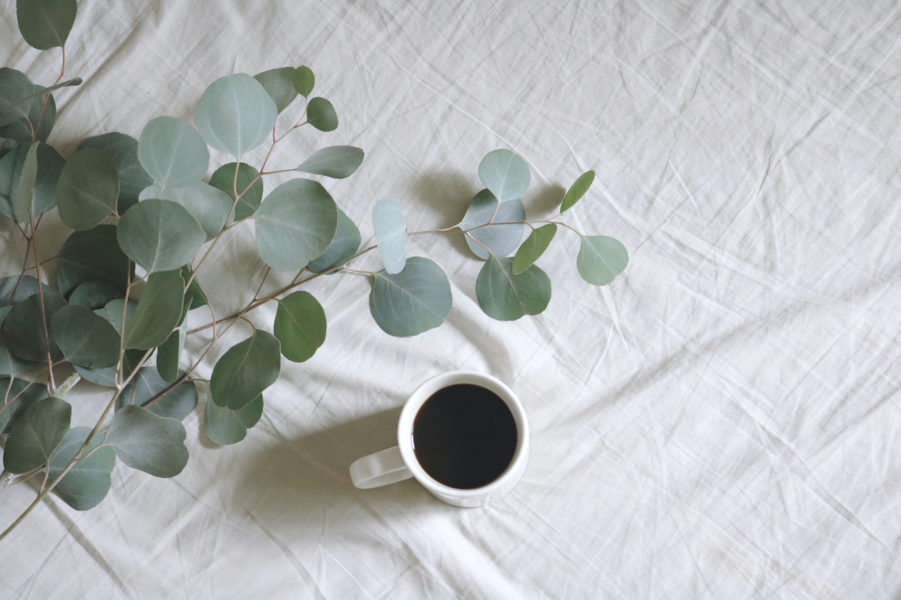

Welcome to Your Mental Health Journey!
About MyDiary:


Having good mental health is equally as important as having good physical health. However, people often do not prioritize their mental health as much. If you are able to set aside as little as 5 minutes a day, you will feel immense improvements! What better way to track your journey than with your very own digital diary. With MyDiary, you are able to look back at past entries or just go directly to today. You can keep track of your mood, write about your day, track your daily accomplishments and take a minute to breathe. Additionally, you can check out our food log! As opposed to regular dieting and calorie-counting apps, we promote healthy eating without hyperfixating on tracking your food to an exact science. We have categories to place your foods in based on what food group it is a part of, what time you ate it, a rating of your enjoyment and you can even upload photos of your food to remember that savory meal. Don't stress over how many awesome features there are, you can pick and choose what you want to use. You can put as much or as little time and effort as you want. Remember: this is YOUR experience, do it your way!
Diary Features:
1. Diary Entries
Express all your strongest emotions, give a play-by-play of your day, write about how the clouds looked today, it is entirely up to you what you want to write about! The diary entries are for you to use however would be most beneficial to you. If you prefer structured prompts feel free to check out the daily prompt and use that for inspiration. You can write your own journal entry and also do the daily prompt, it is up to you to choose how you want to use your journal.
2. Mood Tracker
The mood tracker allows you to capture how you feel in a day with different emotion options. This can be very helpful in noticing trends, as the calendar is color coordinated based on mood. There may be outside factors impacting your mood and seeing how individual days went can be help you be more aware of what causes a decrease in mood and what increases it. This can help you incorporate positive changes into your day to day life!
3. Productivity Tracker
People often focus on all the things they didn't do in a day. However, it can be beneficial to lay out all the things you have done. Productivity doesn't have to be life-changing to count, it can be things as simple as making your bed or sending an email!
4. Relaxation Through Breathing
Improve your day in one short minute by focusing on your breathing. This timer will let you know once your minute is done and you should feel more peaceful after it is over. Deep breathing improves oxygenation, which is beneficial for both the body and the mind.
Food Log Features:
1. Capture a Meal
Everyone knows the phone eats first so now you have the perfect place to store all of your best food pictures in one place!
2. Categorize Foods
After logging a food/meal, you are able to put it into food categories. The choices are: fruits, vegetables, grains, protein, dairy, fats, and other. It is important to assure you are eating balanced foods every day and having something in each category. Tracking that you are getting a wide variety of foods is much more beneficial than following any strict diet.
3. Rating
You are able to rate each food/meal you have in a day. This is done one a scale from 1-10. You can give a rating for taste, how it made you feel, whatever system you feel will be most beneficial to you! This way, you are able to go back and see how you felt about a food last time when deciding if it is the right choice for you again.
4. Time Consumed
It is important to assure you are providing your body with nutrients throughout the day. This is why you can log what time you ate your snack or meal. You will be able to check to see if you are eating often enough and how long it typically takes you to be hungry again after you eat.